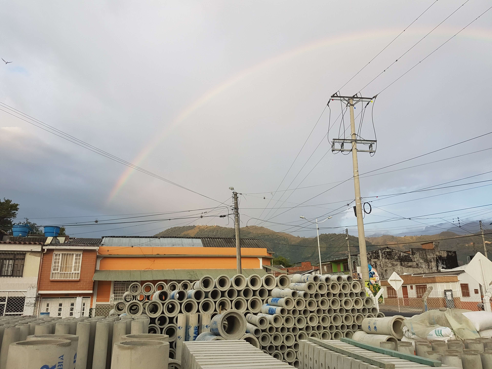
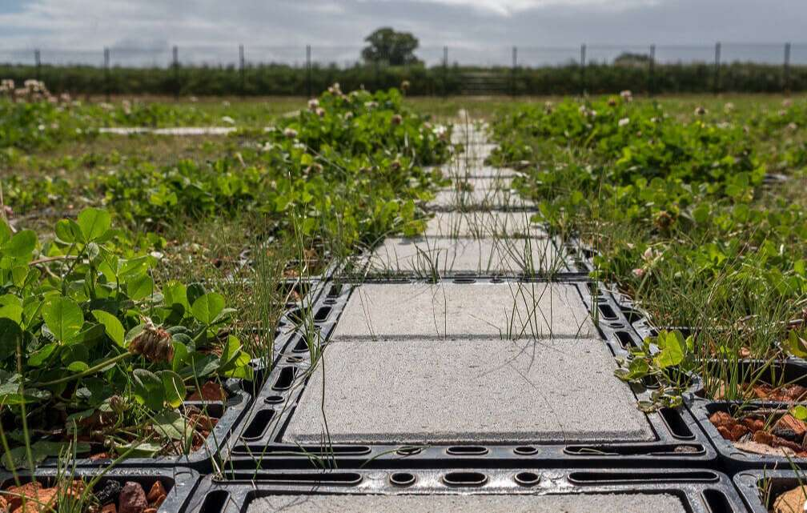

Así empezó todo
JAMAR inicia su camino empresarial como una empresa familiar en 1980, con su fundador “Gabriel Jaramillo Marquez”, como respuesta a una necesidad de suministro de tubos de concreto para alcantarillado para obras de mantenimiento de la red vial regulada por el Ministerio de Obras Públicas y Transporte (MOPT) ubicadas en departamento del Quindio.
De ayer a hoy
Muchas cosas han cambiado desde entonces, pero nuestra actitud sigue siendo la misma. Inspirados desde el principio por la responsabilidad en brindar productos de calidad que generaran compromiso y confianza en nuestros clientes, no hemos parado de dar respuesta en brindar productos con las características y especificaciones de acuerdo a los estándares del mercado y con ello permanecer en el tiempo en cada obra por calidad y durabilidad, respaldando y acompañando de esta manera a nuestros clientes.

Te lo mereces todo.
Valoramos que compren en JAMAR, al igual que nos encanta que nos hablen de sus necesidades y expectativas para cada uno de los proyectos planificados, por eso hemos ampliado la oferta de productos con prefabricados de concreto de formato liviano, igualmente se ha incursionando en nuevas líneas con productos fabricados con material termoplástico reciclado y se han construido alianzas comerciales con socios estratégicos; enfocando el trabajo en conseguir que nuestros clientes optimicen sus recursos a través de nuestros productos y servicios inherentes al suministro de los mismos. En JAMAR, entendemos y atendemos las necesidades de nuestros clientes y le ofertamos posibles soluciones. Queremos seguir siendo parte del equipo de proveedores de su empresa. La experiencia nos dice que conocer las necesidades es el primer paso para crecer juntos Continuamos trabajando para ampliar nuestro portafolio de productos y de esta manera cubrir necesidades de cada uno de los proyectos de nuestros clientes, nos queda un apasionante camino que queremos recorrer juntos.

JAMAR ayuda a tu proyecto a ejecutarlo y vivirlo de manera más sostenible.
Queremos inspirar el cambio, con productos que ayudan a reducir la huella medio ambiental, por ello tenemos productos fabricados con termoplástico reciclado y otros de fácil reciclabildiad como los de concreto. Nuestro trabajo tiene impacto en las obras de ingeniería civil y arquitectónica tanto pública como privada y sabemos ser responsables con nuestro slogan “un compromiso con la sociedad un pacto con la ecología”. En JAMAR como empresa hemos emprendido, aprendido, desaprendido y encontrado métodos para contribuir a la sostenibilidad. Desde el equipo de JAMAR los saludamos y no duden en contactarnos para cualquier inquietud o sugerencia que se presente con el abanico de posibilidades que brindan nuestro portafolio de productos o con el desarrollo de un nuevo producto a partir de su ideación.
